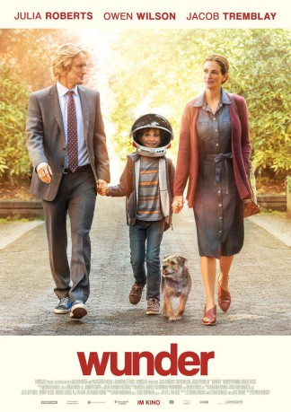

Auszeichnungen: für 1 Oscars nominiert
 gesehen am 17.05.2018
gesehen am 17.05.2018Alternativ: Wonder
Auszeichnungen: für 1 Oscars nominiert gesehen am 17.05.2018
 
 IMDB-Wertung: 8.0 / 10
IMDB-Wertung: 8.0 / 10  Metascore:
Metascore: 
Betrachtet man August ‘Auggie’ Pullman (Jacob Tremblay) nach rein äußerlichen Gesichtspunkten, fällt es schwer, ihn als einen normalen Jungen zu bezeichnen: Von Geburt an ist er von massiven Entstellungen im Gesicht gezeichnet. Bisher wurde er deswegen von seinen Eltern Isabel (Julia Roberts) und Nate (Owen Wilson) mehr oder weniger vor der Außenwelt versteckt gehalten, doch das soll sich mit dem neuen Schuljahr ändern, denn Auggie wird dann die fünfte Klasse der Beecher Prep School besuchen. Und ihm liegt viel an dieser Veränderung. Endlich will er als Mensch akzeptiert und nicht länger als Monster betrachtet werden. Es wird eine Herausforderung für alle Beteiligten…
Jahr: 2017
Dauer: 113 Minuten
FSK: 0
Land: USA Studio: LionsgateTonspuren: DTS - ,
Untertitel: Deutsch,
Auflösung: 1080p (1920x800) Größe: 5447 MB
Regisseur: Stephen Chbosky
Drehbuch: Stephen Chbosky
Soundtrack: Marcelo Zarvos
Darsteller:
 Jacob Tremblay als Auggie
Jacob Tremblay als Auggie Owen Wilson als Nate
Owen Wilson als Nate Julia Roberts als Isabel
Julia Roberts als Isabel Rukiya Bernard als Nurse
Rukiya Bernard als Nurse Mandy Patinkin als Mr. Tushman
Mandy Patinkin als Mr. Tushman Noah Jupe als Jack Will
Noah Jupe als Jack Will Ali Liebert als Ms. Petosa
Ali Liebert als Ms. Petosa Jason McKinnon als School Photographer
Jason McKinnon als School Photographer Nicole Oliver als Jack Will's Mom
Nicole Oliver als Jack Will's Mom Crystal Lowe als Julian's Mom
Crystal Lowe als Julian's Mom Steve Bacic als Julian's Dad
Steve Bacic als Julian's Dad Emma Tremblay als Michelle
Emma Tremblay als Michelle Andre Robinson als School Kid (uncredited)
Andre Robinson als School Kid (uncredited)Datei: X:\2017(N-Z)\Wunder (2017, FSK0, 1920x800).mkv seit 16.05.2018
Festplatte: HD 2017(A-Z)-2018(A-F)
 Es gibt insgesamt 170 Filme in der Gruppe '2017(N-Z)'
Es gibt insgesamt 170 Filme in der Gruppe '2017(N-Z)'